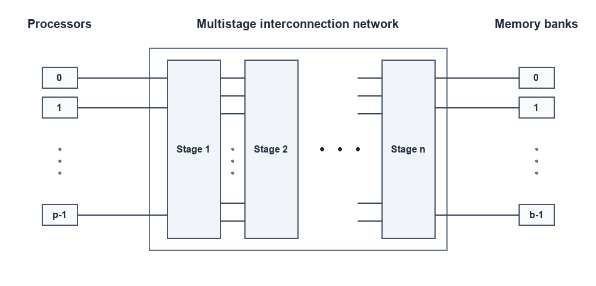
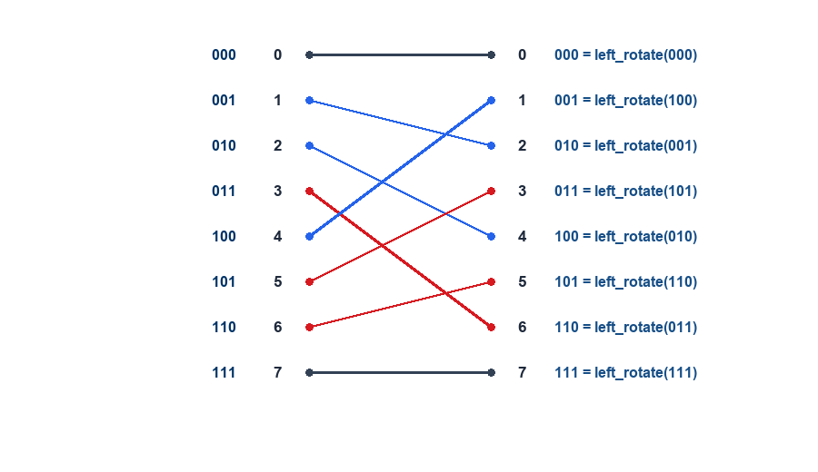
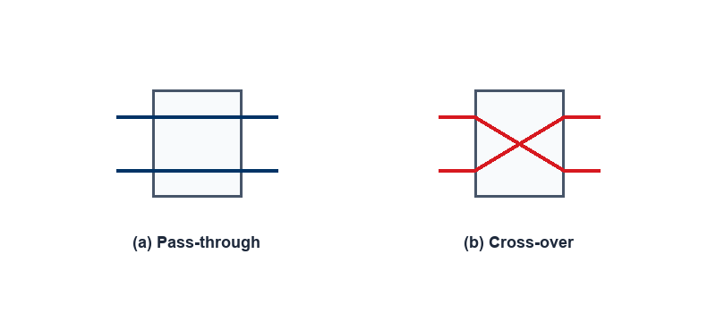
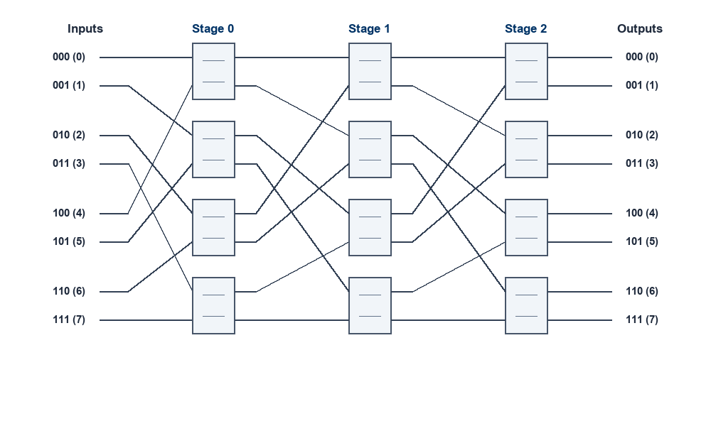
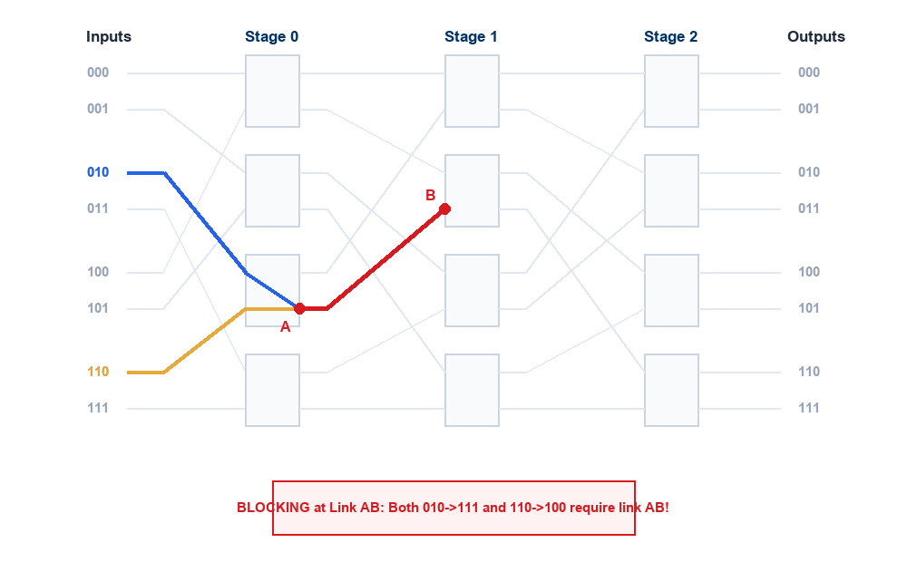
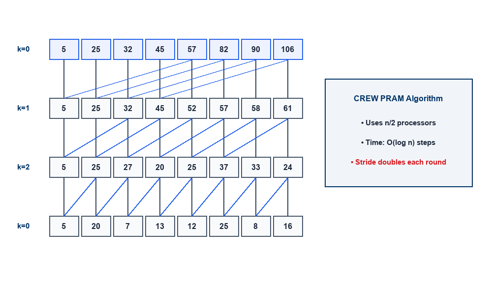
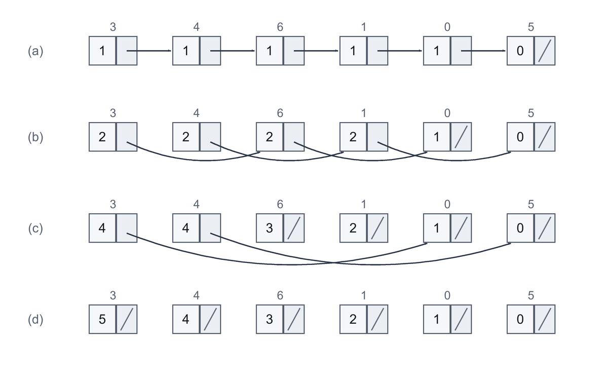

Physical Organizations & PRAM Algorithms
Lecture Outline
- Multistage Interconnection Networks (MINs): Connecting processors to memory banks via multi-tiered switching stages.
- Multistage Omega Network:
- Perfect Shuffle interconnection & bitwise left-rotation permutation.
- \(2 \times 2\) switch configurations (Pass-through and Cross-over).
- Distributed self-routing using destination bit tags.
- Sizing, cost (\(O(p \log p)\)), and internal link blocking.
- Evaluating Interconnection Networks:
- Quantitative metrics: Diameter, Arc/Node Connectivity, Bisection Width, and Cost.
- Comparative analysis of Static Topologies (Mesh, Torus, Hypercube, Tree, \(k\)-ary \(d\)-cube).
- Comparative analysis of Dynamic Topologies (Crossbar, Omega, Dynamic Tree).
- The PRAM Algorithmic Paradigm:
- Two-phase execution model and explicit concurrency.
- Fundamental PRAM Algorithms:
- Parallel Prefix Sum (Scan): Stride doubling in \(O(\log n)\) time on CREW PRAM.
- Pointer Jumping: Logarithmic traversal of pointer-based data structures.
- Parallel List Ranking: Wyllie’s algorithm for linked list distance ranking.
Interconnection Networks: Multistage Networks
A Multistage Interconnection Network (MIN) provides an indirect, switch-based communication fabric connecting \(p\) processing elements to \(b\) memory banks through multiple cascaded switching stages.
Key Characteristics
- Multi-Tiered Switching: Arranged in \(n = \log p\) intermediate switching stages.
- Modular-Memory Architecture: Processors do not connect point-to-point; instead, packets pass from stage to stage.
- Balanced Trade-off:
- Eliminates the severe serialization bottleneck of a single Shared Bus (\(O(p)\) access latency).
- Avoids the astronomical hardware complexity of a full Crossbar Switch (\(\Theta(p^2)\) crosspoints).
- Latency & Cost: Achieves \(O(\log p)\) latency with only \(\Theta(p \log p)\) total switches.

Multistage Omega Network: Definition & Architecture
One of the most foundational and widely deployed multistage interconnection topologies is the Omega Network (Lawrie, 1975).
Architectural Parameters
- Number of Stages: An Omega network connecting \(p\) inputs to \(p\) outputs (\(p = 2^k\)) has exactly: \[\text{Number of Stages} = \log_2 p\]
- Switching Elements: Each stage contains \(p/2\) switches of size \(2 \times 2\).
- Total Switch Complexity: \[\text{Total Switches} = \frac{p}{2} \log_2 p = \Theta(p \log p)\]
- Stage Interconnection: Each stage is interconnected to the next stage by a fixed Perfect Shuffle permutation.
Left Rotation Permutation
At each stage, input terminal \(i\) connects to output terminal \(j\) according to the Left Rotation function:
\[j = \begin{cases} 2i, & 0 \le i \le \frac{p}{2} - 1 \\ 2i + 1 - p, & \frac{p}{2} \le i \le p - 1 \end{cases}\]
This is identical to a 1-bit cyclic left shift of the binary index \(i\).
The Perfect Shuffle Permutation (\(p=8\))
The Perfect Shuffle maps an \(n\)-bit binary representation \((b_{k-1} b_{k-2} \dots b_1 b_0)_2\) to its 1-bit left-rotated equivalent \((b_{k-2} \dots b_0 b_{k-1})_2\).
| Input \(i\) | Binary | Mapped Output \(j\) | Left-Rotated Binary |
|---|---|---|---|
| 0 | 000 |
0 | 000 |
| 1 | 001 |
2 | 010 |
| 2 | 010 |
4 | 100 |
| 3 | 011 |
6 | 110 |
| 4 | 100 |
1 | 001 |
| 5 | 101 |
3 | 011 |
| 6 | 110 |
5 | 101 |
| 7 | 111 |
7 | 111 |

\(2 \times 2\) Switch Operation Modes
The fundamental building block of the Omega network is the \(2 \times 2\) crossbar switch. It accepts two inputs and routes them to two outputs in one of two configurations:
1. Pass-Through (Straight)
- Input port 0 connects directly to Output port 0.
- Input port 1 connects directly to Output port 1.
- Signals pass straight through without crossing.
2. Cross-Over (Crossed)
- Input port 0 connects to Output port 1.
- Input port 1 connects to Output port 0.
- Signals swap positions across the switch.

Two switching configurations of the \(2 \times 2\) switch: (a) Pass-through; (b) Cross-over
Complete \(8 \times 8\) Omega Network
An \(8 \times 8\) Omega network consists of \(\log_2 8 = 3\) stages. Each stage contains \(8/2 = 4\) switches (\(12\) switches total).
- Stage 0: Receives inputs permuted by the first perfect shuffle.
- Stage 1: Connects outputs of Stage 0 to Stage 1 switches via shuffle.
- Stage 2: Connects outputs of Stage 1 to Stage 2 switches via shuffle.
- Hardware Efficiency:
- Full crossbar requires \(8 \times 8 = 64\) switches.
- Omega network requires only \(\frac{8}{2} \times 3 = 12\) switches!
- Cost scales as \(\Theta(p \log p)\).

Distributed Self-Routing in Omega Networks
Omega networks support decentralized self-routing (Delta routing) based entirely on the binary bits of the destination address \(D = (d_{k-1} d_{k-2} \dots d_0)_2\):
Self-Routing Algorithm
- Let a packet be routed to destination \(D = (d_{k-1} \dots d_0)_2\).
- At Stage \(s\) (where \(s = 0, 1, \dots, k-1\)):
- The switch inspects bit \(d_{k-1-s}\) (the \((s+1)\)-th bit of the destination tag).
- If bit \(= 0\): The switch routes the packet out of its Upper output port (0).
- If bit \(= 1\): The switch routes the packet out of its Lower output port (1).
- No Central Controller: Each switch makes local routing decisions instantly in hardware, achieving \(O(\log p)\) path setup time!
Routing Example (\(010_2 \to 110_2\))
- Target destination: \(D = 6 = 110_2\).
- Stage 0: Inspects MSB (
1) \(\to\) selects lower port. - Stage 1: Inspects middle bit (
1) \(\to\) selects lower port. - Stage 2: Inspects LSB (
0) \(\to\) selects upper port. - The packet arrives precisely at output \(110_2\)!
Blocking & Contention in Omega Networks
A network is blocking if certain permutation requests cannot be routed simultaneously because multiple paths require the same internal link at the same cycle.
Contention Analysis (Slide 7)
Consider two concurrent messages: 1. Message 1: Source \(010_2\) (2) to Destination \(111_2\) (7). - At Stage 0: Destination MSB is 1 \(\to\) exits lower port of Switch 2 onto Link A. 2. Message 2: Source \(110_2\) (6) to Destination \(100_2\) (4). - At Stage 0: Destination MSB is 1 \(\to\) exits lower port of Switch 2 onto Link A. - Link Contention: Both paths require Link AB between Stage 0 and Stage 1 \(\implies\) one message is blocked!

Evaluation Metrics for Interconnection Networks
To objectively compare static and dynamic network architectures, parallel architects evaluate four fundamental quantitative metrics (Grama et al., 2003):
1. Network Diameter (\(D\))
- The maximum shortest-path distance (measured in number of links or hops) between any pair of nodes in the network.
- Represents the worst-case communication latency for a packet traversing the network.
- Lower diameter is desirable (\(O(1)\) or \(O(\log p)\)).
2. Connectivity
- Arc Connectivity: Minimum number of communication links that must be severed to disconnect the network into disjoint partitions.
- Node Connectivity: Minimum number of nodes that must fail to disconnect the network.
- High connectivity ensures fault tolerance and multiple alternate paths.
3. Bisection Width (\(B\))
- The minimum number of physical wires/links that must be cut to divide the network into two equal halves (each with \(p/2\) nodes).
- Measures the global communication bottleneck and aggregate bisection bandwidth available for all-to-all communication.
4. Hardware Cost
- The total number of physical links or switching nodes required to build the network.
- Influenced by packaging complexity, layout constraints, and wire lengths.
Evaluating Static Interconnection Networks
Static (direct) networks connect processing nodes directly via dedicated point-to-point physical channels.
| Network Topology | Diameter (\(D\)) | Bisection Width (\(B\)) | Arc Connectivity | Cost (No. of Links) |
|---|---|---|---|---|
| Completely-Connected | \(1\) | \(p^2 / 4\) | \(p - 1\) | \(\frac{p(p-1)}{2} = \Theta(p^2)\) |
| Star | \(2\) | \(1\) | \(1\) | \(p - 1\) |
| Complete Binary Tree | \(2 \log\left(\frac{p+1}{2}\right)\) | \(1\) | \(1\) | \(p - 1\) |
| Linear Array | \(p - 1\) | \(1\) | \(1\) | \(p - 1\) |
| 2-D Mesh (no wraparound) | \(2(\sqrt{p} - 1)\) | \(\sqrt{p}\) | \(2\) | \(2(p - \sqrt{p})\) |
| 2-D Wraparound Mesh (Torus) | \(2 \lfloor \sqrt{p}/2 \rfloor\) | \(2\sqrt{p}\) | \(4\) | \(2p\) |
| Hypercube (\(d\)-cube, \(p = 2^d\)) | \(\log p\) | \(p / 2\) | \(\log p\) | \(\frac{p \log p}{2}\) |
| Wraparound \(k\)-ary \(d\)-cube (\(p = k^d\)) | \(d \lfloor k/2 \rfloor\) | \(2k^{d-1}\) | \(2d\) | \(d \cdot p\) |
Trade-off Analysis: Static Networks
Linear Array & Tree
- Pros: Minimal link cost (\(O(p)\) links).
- Cons: Severe bottleneck (\(B = 1\)). High diameter (\(O(p)\) for array).
- Tree roots suffer extreme traffic congestion.
2D Mesh & Torus
- Pros: Constant node degree (4 for Torus), planar layout, easily routed on silicon/PCBs.
- Cons: Moderate diameter (\(O(\sqrt{p})\)) and bisection width (\(O(\sqrt{p})\)).
Hypercube (\(d\)-cube)
- Pros: Ultra-low diameter (\(O(\log p)\)), high bisection width (\(O(p)\)), high fault tolerance (\(d = \log p\)).
- Cons: Node degree grows with \(p\), making high-dimensional physical wiring complex.
[!TIP] \(k\)-ary \(d\)-cube unifies rings (\(d=1\)), 2D tori (\(d=2, k=\sqrt{p}\)), 3D tori (\(d=3\)), and hypercubes (\(k=2, d=\log_2 p\)) under a single mathematical framework!
Evaluating Dynamic Interconnection Networks
Dynamic (indirect) networks use intermediate switching elements to dynamically establish communication paths between processors and memory banks.
| Dynamic Network Topology | Diameter (\(D\)) | Bisection Width (\(B\)) | Arc Connectivity | Cost (No. of Links / Switches) |
|---|---|---|---|---|
| Crossbar Switch | \(1\) | \(p\) | \(1\) | \(p^2\) |
| Omega Network | \(\log p\) | \(p / 2\) | \(2\) | \(\frac{p}{2} \log p\) |
| Dynamic Tree | \(2 \log p\) | \(1\) | \(2\) | \(p - 1\) |
Key Insights
- Crossbar: Optimal latency (\(D=1\)) and maximum non-blocking bandwidth (\(B=p\)), but \(O(p^2)\) cost limits scalability to small \(p \le 64\).
- Omega Network: Scales efficiently with \(O(p \log p)\) switches and \(O(\log p)\) diameter; trade-off is susceptibility to internal blocking.
- Dynamic Tree: Low switch count (\(p-1\)), but vulnerable to root saturation unless converted to a Fat Tree with widening upper channels.
PRAM Algorithms: The Algorithmic Paradigm
The Parallel Random-Access Machine (PRAM) serves as the canonical theoretical foundation for parallel algorithm design (Fortune & Wyllie, 1978; JáJá, 1992).
Two-Phase Execution Model
- Phase 1 (Activation):
- A sufficient number of processors (\(p\)) are activated and assigned unique identifiers (\(P_i\) for \(0 \le i < p\)).
- Phase 2 (Parallel Computation):
- Activated processors execute operations synchronously in parallel lockstep on shared memory.
Explicit Concurrency
- The algorithm explicitly specifies which operations are performed by which processor at each time step.
Theoretical Significance
- Concurrency Focus: Focuses exclusively on algorithmic concurrency; abstracts away physical network delays, wire contention, and synchronization overhead.
- Robust Design Paradigm: Algorithms developed for PRAM provide upper bounds on parallel speedup and can be translated to real architectures (MPI, OpenMP, CUDA) via Brent’s Theorem: \[T_p \le \frac{W}{p} + T_\infty\]
PRAM Algorithm Example: Prefix Sum (Scan)
Problem Formulation
Given an input sequence of \(n\) values \(A = [a_1, a_2, \dots, a_n]\) and an associative binary operator \(\oplus\) (e.g., \(+\), \(\times\), \(\min\), \(\max\)), compute all \(n\) running prefix reductions:
\[S_1 = a_1, \quad S_2 = a_1 \oplus a_2, \quad S_3 = a_1 \oplus a_2 \oplus a_3, \quad \dots, \quad S_n = \bigoplus_{i=1}^n a_i\]
Sequential vs. Parallel
- Sequential Baseline: Requires \(n - 1\) operations executed sequentially \(\implies \mathbf{\Theta(n)}\) time.
- CREW PRAM Algorithm: Uses \(n/2\) processors and computes all prefix sums in \(\mathbf{O(\log n)}\) time using recursive distance doubling!
Algorithmic Applications
- Stream compaction & filtering.
- Radix sort and parallel sorting algorithms.
- Parallel evaluation of polynomials and linear recurrences.
- Carry-lookahead adders in arithmetic hardware.
Parallel Prefix Sum: CREW Algorithm Trace
In each iteration \(k\) (for \(k = 0, 1, \dots, \lceil \log_2 n \rceil - 1\)), elements at distance \(2^k\) are summed in parallel:
# CREW PRAM Prefix Sum (Hillis-Steele Algorithm)
for k from 0 to ceil(log2(n)) - 1:
for i from 2^k + 1 to n in parallel:
A[i] = A[i] + A[i - 2^k]Execution Steps (\(n=8\))
- Initial Array:
[5, 20, 7, 13, 12, 25, 8, 16] - Step 1 (\(k=0\), stride 1):
[5, 25, 27, 20, 25, 37, 33, 24] - Step 2 (\(k=1\), stride 2):
[5, 25, 32, 45, 52, 57, 58, 61] - Step 3 (\(k=2\), stride 4):
[5, 25, 32, 45, 57, 82, 90, 106] - Result:
[5, 25, 32, 45, 57, 82, 90, 106]in \(3 = \log_2 8\) steps!

The Pointer Jumping Technique
Pointer Jumping (or pointer doubling) is a fundamental algorithmic technique on PRAM for linked lists and directed trees (Wyllie, 1979; JáJá, 1992).
The Core Mechanism
- In parallel for every node \(i\), replace its pointer \(P[i]\) with the pointer of the node it points to: \[P[i] \leftarrow P[P[i]]\]
- Exponential Contraction: In each iteration, the distance spanned by each pointer doubles: \[1 \longrightarrow 2 \longrightarrow 4 \longrightarrow 8 \longrightarrow \dots \longrightarrow 2^k\]
- Convergence in \(O(\log n)\):
- For a linked list of length \(n\), every node points to the end of the list (or root of a tree) in \(\lceil \log_2 n \rceil\) iterations!
Key Applications
- List Ranking: Determining the distance of each node to the end of the list.
- Root Finding: Finding the root of every tree in a forest.
- Tree Contraction: Evaluating tree-structured arithmetic expressions in logarithmic time.
- Euler Tour Techniques: Computing depth, subtree sizes, and preorder numbering in parallel.
Pointer Jumping Application: List Ranking
The Problem
Given a singly linked list of \(n\) elements stored in arbitrary memory locations, determine for each node its distance (rank) to the end (tail) of the list.
Sequential Algorithm (\(O(n)\))
- Follows successor pointers from head to tail in two passes:
- Pass 1: Traverse the list to count total elements \(n\).
- Pass 2: Traverse again to assign ranks from the tail (\(0, 1, 2, \dots, n-1\)).
- Bottleneck: Inherently sequential because memory locations are not contiguous; requires \(O(n)\) time.
Parallel PRAM Approach (\(O(\log n)\))
- Assign one processor to each list element.
- Jump pointers in parallel: \(\text{next}[i] \leftarrow \text{next}[\text{next}[i]]\).
- Simultaneously accumulate distances: \[\text{position}[i] \leftarrow \text{position}[i] + \text{position}[\text{next}[i]]\]
- Achieves full list ranking in \(O(\log n)\) time!
Parallel List Ranking: PRAM Algorithm
// PRAM List Ranking Algorithm (Wyllie's Algorithm)
for all i in parallel do
if next[i] == NIL then
position[i] := 0
else
position[i] := 1
for step := 1 to ceil(log2(n)) do
for all i in parallel do
if next[i] != NIL then
position[i] := position[i] + position[next[i]]
next[i] := next[next[i]]Complexity Breakdown
- Processors: \(p = n\) processors (one per node).
- Parallel Time: \(T(n) = O(\log n)\) synchronous steps.
- Total Work: \(W(n) = p \times T(n) = O(n \log n)\) operations.
- PRAM Model: Operates under EREW PRAM (Exclusive Read, Exclusive Write) since each node accesses distinct successor pointers.
Step-by-Step List Ranking Trace (Slide 17)
Consider 6 elements stored at arbitrary indices ordered as: \(\mathbf{3 \to 4 \to 6 \to 1 \to 0 \to 5 \to \text{NIL}}\).
State Progression
- (a) Initial State:
- Non-tails have distance
1; tail (Node 5) has distance0. - Next pointers: \(3\to 4, 4\to 6, 6\to 1, 1\to 0, 0\to 5, 5\to \text{NIL}\).
- Non-tails have distance
- (b) Iteration 1 (stride 1):
- Distances: \([2, 2, 2, 2, 1, 0]\).
- Next: \(3\to 6, 4\to 1, 6\to 0, 1\to 5, 0\to \text{NIL}\).
- (c) Iteration 2 (stride 2):
- Distances: \([4, 4, 3, 2, 1, 0]\).
- Next: \(3\to 0, 4\to 5, 6\to \text{NIL}, 1\to \text{NIL}\).
- (d) Iteration 3 (stride 4, Final):
- Distances: \([5, 4, 3, 2, 1, 0]\). All next pointers \(\to \text{NIL}\)!

Lecture Summary
- Multistage Interconnection Networks (MINs):
- Provide a scalable balance between shared buses (\(O(p)\) bottleneck) and crossbars (\(O(p^2)\) cost).
- An Omega Network requires \(\log_2 p\) stages of \(2\times 2\) switches, costing \(\Theta(p \log p)\) switches.
- Inter-stage links implement a Perfect Shuffle (1-bit left rotation) with distributed self-routing, but are subject to link blocking.
- Interconnection Network Evaluation:
- Topologies are compared across Diameter, Arc Connectivity, Bisection Width, and Cost.
- Hypercubes achieve \(O(\log p)\) diameter and \(O(p)\) bisection width at \(O(p \log p)\) link cost.
- PRAM Algorithms & Techniques:
- PRAM Model: Explicit, synchronization-free abstraction for discovering maximum concurrency.
- Prefix Sum: Computes all cumulative prefixes in \(O(\log n)\) time using stride doubling.
- Pointer Jumping: Replaces \(P[i]\) with \(P[P[i]]\) to traverse linked lists and trees in \(O(\log n)\) time, powering algorithms like List Ranking.
References & Further Reading
- Grama, A., Gupta, A., Karypis, G., & Kumar, V. (2003). Introduction to Parallel Computing (2nd ed.). Addison-Wesley. Chapter 2: “Parallel Programming Platforms” & Chapter 9: “Sorting Networks”.
- JáJá, J. (1992). An Introduction to Parallel Algorithms. Addison-Wesley. Chapter 2: “PRAM Algorithms and Pointer Jumping”.
- Lawrie, D. H. (1975). “Access and Alignment of Data in an Array Processor”. IEEE Transactions on Computers, C-24(12), pp. 1145–1155. (Original Omega Network paper).
- Wyllie, J. C. (1979). The Complexity of Parallel Computations. Ph.D. dissertation, Cornell University. (Introduced Pointer Jumping & List Ranking).
- Leighton, F. T. (1992). Introduction to Parallel Algorithms and Architectures: Arrays, Trees, Hypercubes. Morgan Kaufmann.

CS F422: Parallel Computing • BITS Pilani, Hyderabad Campus